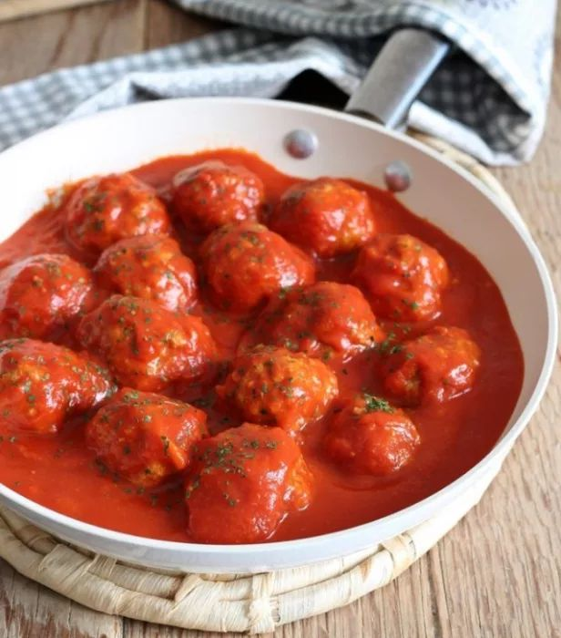
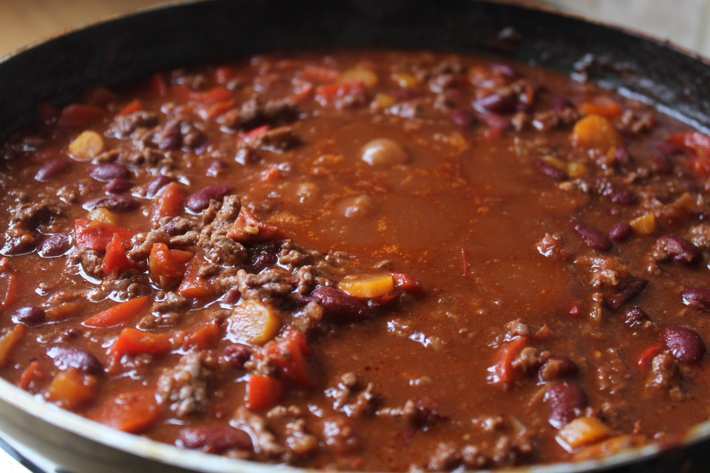
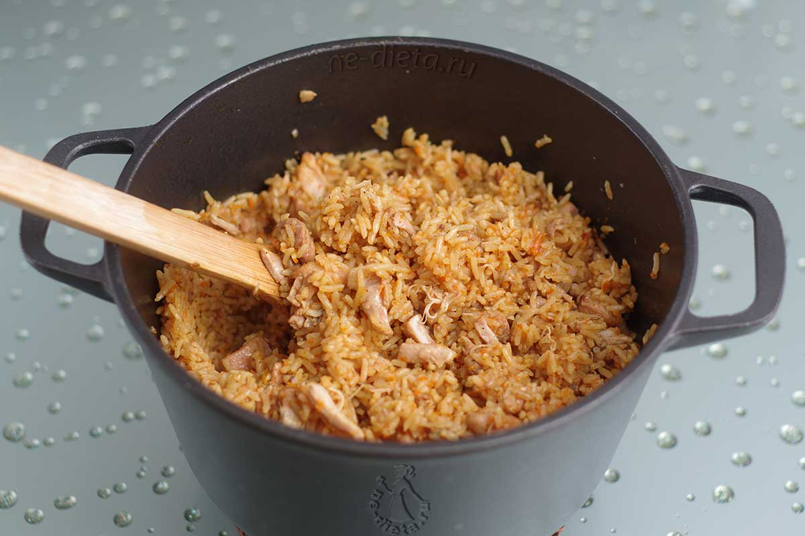
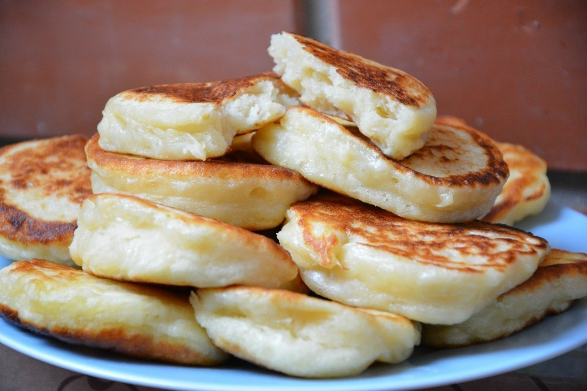

Тефтели в томатном соусе
- Фарш мясной (лучше говяжий или свиной) - 500 г
- Лук - 1 луковица
- Чеснок - 2 зубчика
- Рис - 70 г
- Томатная паста - 2 ст. ложки
- Яйца - 1 шт.
- Вода - 250 мл
- Лавровый лист - 1 шт.
- Соль, перец, паприка по вкусу
- Растительное масло для жарки
Пошаговый рецепт
- Рис отварить до полуготовности и остудить (важно!).
- В чаше соединить фарш, рис, мелко порезанные лук и чеснок, яйцо, специи.
- Все очень хорошо перемешать руками и скатать тефтели (желательно мокрыми руками).
- В отдельной посуде смешать томатную пасту с солью и с водой.
- Разогреть масло на сковороде и выложить туда тефтели.
- На сильном огне обжарить тефтели со всех сторон до золотистого цвета..
- Залить тефтели томатным соусоми довести до кипения.
- Убавить огонь, накрыть крышкой и тушить 40 минут.
- За время тушения тефтели перевернуть 1-2 раза, чтобы они готовились наиболее равномерно..
- Минут за 10 до готовности положить лавровый лист. Приятного аппетита!

Чили кон карне
- Бобы фасоли - 400 г
- Фарш мясной (лучше говяжий или свиной) - 500 г
- Лук - 1 луковица
- Чеснок - 2 зубчика
- Перец болгарский - 1-2 шт.
- Помидоры - 300 г или томатная паста - 3 ст. ложки
- Соль, перец красный и черный по вкусу
- Растительное масло для жарки
Пошаговый рецепт
- За 12-24 часа до готовки замочить бобы фасоли.
- В кастрюлю высыпать фасоль и залить водой так в пропорции 1:1.5, варить где-то час.
- В разогретую сковороду налить растительное масло, дождаться, пока оно нагреется, и выложить обжариваться фарш.
- Через 7 минут закинуть туда мелко нарезанные лук и чеснок.
- Через 2 минуты закинуть перец, порезанный на кубики, также порезанные помидоры или томатную пасту, соль и специи (блюдо должно быть остреньким).
- Сваренную фасоль высыпать в уже почти готовый фарш.
- Убавить огонь и оставить тушится на 20 минут.
- Приятного аппетита!

Плов
- Филе курицы - 400 г
- Рис - 250 г
- Чеснок - 6 зубчиков
- Томатная паста - ст. ложка с горкой
- Приправа Maggi
- Соль, перец черный по вкусу
- Растительное масло для жарки
Пошаговый рецепт
- Нарезать курицу на кубики и сбросить в разогретое масло в сковороде, добавить соль и перец.
- Обжарить до готовности, подождать, пока выпарится весь сок (но не зажаривать сильно).
- В разогретую сковороду налить растительное масло, дождаться, пока оно нагреется, и выложить обжариваться фарш.
- Добавить рис и "пожарить" его вместе с мясом 2 минуты.
- Добавить воду так, чтобы она выступала над рисом на величину одного пальца.
- Сразу же добавить приправу Maggi и томатную пасту, хорошо размешать, и больше до конца готовки не мешать (важно!).
- Довести до кипения и убавить огонь, вставить в разные места зубчики чеснока.
- Накрыть крышкой и варить 20 минут, пока рис не впитает всю воду.
- Готово:)

Пышные оладьи
- Кефир - 1 стакан (250 мл)
- Яйца - 1-2 шт.
- Мука пшеничная - 1,5 стакана (около 240 г)
- Сахар - 2-3 ст. ложки
- Соль - 0,5 ч. ложки
- Сода - 0,25 ч. ложки
- Масло растительное - для жарки
Пошаговый рецепт
- К яйцам добавить сахар и соль.
- Хорошо взбить венчиком яйца с сахаром.
- Затем добавить кефир. Хорошо перемешать.
- Всыпать в смесь просеянную муку частями, постоянно взбивая венчиком, чтобы не было комочков. Добавить соду.
- Хорошо всё перемешать. Тесто для оладий на кефире оставить минут на 20-30. Больше тесто не перемешивать!
- В хорошо разогретое масло столовой ложкой выкладывать тесто.
- Жарим оладьи на среднем огне до образования аппетитной корочки с двух сторон. Это примерно по 2-3 минуты на каждую сторону.
- Как только оладьи немного остынут, можно приступать к чаепитию!
| Объем в мл | Объем в ложках и стаканах |
|---|---|
| 5 мл | 1 ч.л. |
| 18 мл | 1 ст.л. |
| 100 мл | 1/2 стакана |
| 200 мл | 1 стакан |
| 1 л | 5 стаканов |